All living things carry out certain basic functions to stay alive
All animals must perform certain essential functions to survive, grow, and reproduce. These are called life processes. The four main life processes studied in this chapter are:
🍎 Nutrition
Taking in and using food for energy and growth
💨 Respiration
Breaking down food to release energy (ATP)
❤ Transportation
Moving nutrients, O₂ and wastes around the body
💧 Excretion
Removing metabolic waste products from the body
🍎
Nutrition in Animals
Animals eat different types of food — energy comes from what they eat
🌿 What Do Animals Eat? (NCERT)
Animals eat different types of food. Look at these examples:
🐝
Bees & Sunbirds
Suck the nectar of flowers
👶
Human infants & many young animals
Feed on their mother's milk
🐍
Snakes (e.g., Python)
Swallow whole the animals they prey upon
🐟
Some aquatic animals
Filter tiny food particles floating nearby
Animals, including humans, obtain energy from food, which enables them to carry out various life processes. Food contains complex components — carbohydrate, protein, and fat — which must be broken down into simpler forms before the body can use them.
🔑 Autotrophs vs Heterotrophs
Feature
Autotrophs (Plants)
Heterotrophs (Animals)
Food source
Make own food (photosynthesis)
Eat other organisms
Energy source
Sunlight
Food (stored chemical energy)
Examples
Plants, algae, cyanobacteria
All animals, fungi
Nutrition type
Autotrophic
Heterotrophic
🦁 Holozoic Nutrition
Animal takes in solid food that is digested inside the body
How do complex food components get broken down into simpler forms and used by the body?
📖 From the Book
Breaking down of complex food components into simpler forms occurs in a long tube called the alimentary canal. This process starts in the mouth and ends at the anus. As food moves through this canal, digestive juices secreted at different parts break it down into simpler forms. This simpler form of food is absorbed by different parts of our alimentary canal and transported to various parts of our body to carry out various functions.
Journey of Food Through the Alimentary Canal
👄 Mouth
→
Oesophagus
→
Stomach
→
Small Intestine
→
Large Intestine
→
Anus
Fig. 9.1 — Human Digestive System
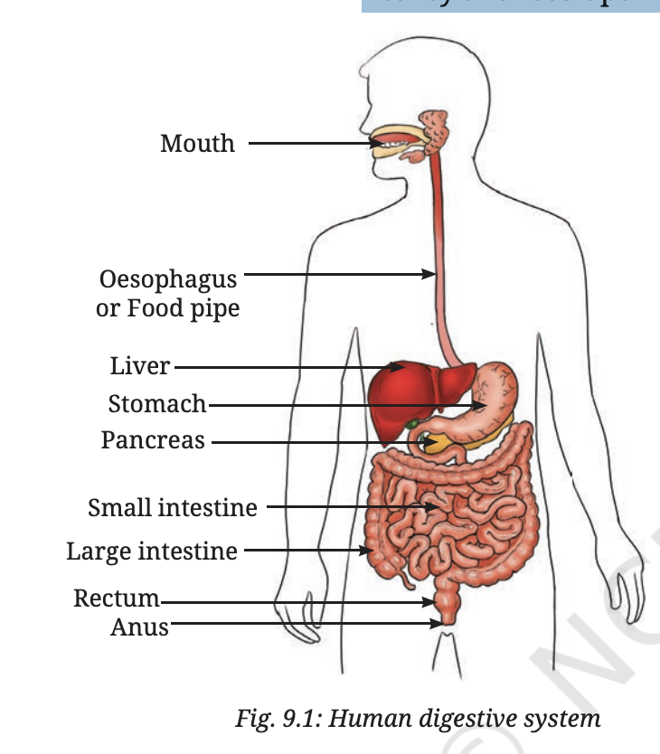
9.1.1 Digestion in Human Beings
Let us trace the journey of food inside our body as it passes through different parts of the alimentary canal.
👄 Beginning with the Mouth Cavity
The journey of the food you eat begins when it enters your mouth. Your teeth break down food you eat into smaller pieces by the processes of crushing and chewing. This process of initial breakdown of food into fine pieces is called mechanical digestion.
Think about your favourite food. Does your mouth feel watery? 💧
This is because of more saliva that gets released when you recall your favourite food. The saliva in your mouth helps break down components of food into simpler ones.
Teeth — break food by crushing and chewing (mechanical digestion):
Incisors (8): cutting
Canines (4): tearing
Premolars (8): crushing and grinding
Molars (12): grinding
Tongue — mixes food with saliva; helps push food to the back of the mouth for swallowing
Salivary glands — produce saliva which contains a digestive juice that helps break down starch into sugar — this is why chapati or rice tastes sweet when chewed for 30–60 seconds!
The well-chewed food mixed with saliva forms a soft ball called a bolus
🔬 Activity — The Chapati Experiment
Take a small piece of chapati or a bite-sized portion of boiled rice and chew it properly for 30–60 seconds.
At first, the chapati or rice has its usual taste.
As you continue chewing, the food begins to taste sweet!
Why? Chapati/rice contains starch (a carbohydrate). Saliva breaks starch down into sugar — hence the sweet taste.
🧪 Activity — Iodine Test for Starch
🧫
Test Tube A
Boiled rice + water + iodine drops
🔵 Blue-black colour
Starch is present
🧫
Test Tube B
Chewed boiled rice + water + iodine drops
No colour change (or very light)
Starch has been broken down by saliva
We learned in Grade 6 that iodine gives a blue-black colour when it reacts with starch. In Test Tube B, starch has been broken down into simple sugars by saliva — so no (or very little) blue-black colour appears. If colour still appears in B, increase the chewing time and repeat.
📖 Key Definition — Digestion
Now, we know that saliva secretion in the mouth helps break down starch into sugars. This process of breaking complex food components into simpler forms in the body is called digestion. Food is partially digested in the mouth. Let us learn how this partially digested food gets further digested through the alimentary canal.
🦷 Science and Society — Oral Hygiene
A healthy mouth requires good oral hygiene. We should:
Brush our teeth and clean our tongue twice a day
Rinse our mouth with water after each meal
This prevents tooth decay and bad smell in the mouth
🫁 Food Pipe (Oesophagus) — Fig. 9.2
When you chew your food, your saliva not only helps in digesting the starch but also moistens it, making it soft and easy to swallow. Your tongue helps in mixing chewed food with saliva and pushing this softened food into a long, flexible tube called the food pipe or oesophagus.
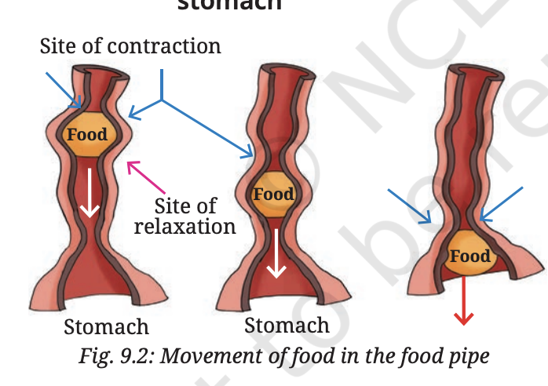
Fig. 9.2 — Movement of food in the food pipe
A long, flexible tube connecting the mouth to the stomach
The walls of the food pipe gently contract and relax in a wave-like motion to push the food down into the stomach
This movement is called peristalsis — it takes place throughout the entire alimentary canal and pushes food forward
No digestion of food occurs in the oesophagus
🟡 Stomach
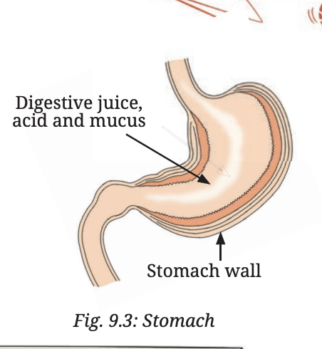
Fig. 9.3: Stomach — showing digestive juice, acid and mucus secreted from the stomach wall
In the stomach, the walls contract and relax to churn the food. The churned food is then mixed with a secretion from the inner lining of the stomach. The secretion from the stomach contains digestive juice, acid, and mucus.
The digestive juice of the stomach breaks down proteins present in the food into simpler components.
Digestive juice — breaks down proteins into simpler components
Acid — not only helps break down proteins but also kills many harmful bacteria
Mucus — protects the stomach lining from the acid, preventing damage
In the stomach, the food is partially digested and transformed into a semi-liquid mass, preparing it for the next stage of digestion.
⭐ Fascinating Facts — How did scientists learn about digestion?
In 1822, a man named Alexis St. Martin was accidentally shot in the stomach. He was treated by a doctor, William Beaumont. However, his wound never fully healed, leaving a small permanent hole. This opening allowed Dr. Beaumont to observe digestion in the stomach as it happened. He conducted experiments on how different foods were broken down and studied how emotions affect digestion.
🟢 Small Intestine
Although it is called the small intestine, it is almost 6 metres long — almost twice the height of your classroom! It is the longest part of the alimentary canal.
The small intestine receives digestive secretions from three sources — the inner lining of the small intestine itself, and two more structures — the liver and the pancreas (Fig. 9.4).
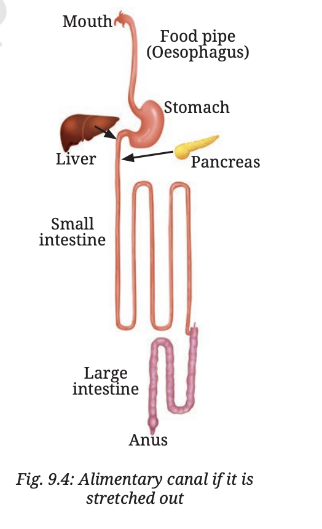
Fig. 9.4 — Alimentary canal if it is stretched out
Bile (from the liver) — mildly basic in nature; neutralises acids present in food coming from the stomach; breaks down fats into tiny droplets, making fat digestion easier
Pancreatic juice (from the pancreas) — also basic in nature; neutralises acids in the food; breaks down carbohydrates, proteins, and fats
Intestinal juice (from the wall of the small intestine) — further breaks down fats, proteins, and partially digested carbohydrates into simpler forms
Final products of digestion: Carbohydrates → Glucose | Proteins → Amino acids | Fats → Fatty acids + Glycerol
The digested nutrients pass on from the small intestine into the blood present in blood vessels found in the walls of the small intestine. This process is called absorption of nutrients.
The inner lining of the small intestine is thin and has thousands of finger-like projections (Fig. 9.5) that increase the surface area for efficient nutrient absorption. These finger-like projections allow the digested nutrients to pass into the blood, which carries them to different parts of the body. These nutrients provide energy, support growth and repair, and help the body function properly.
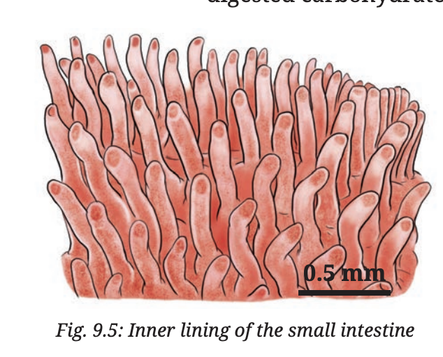
Fig. 9.5 — Inner lining of the small intestine showing finger-like projections
🌿 Science and Society — Celiac Disease
Celiac disease is a condition in which the body reacts to gluten, a protein found in wheat, barley, and rye. This reaction damages the inner lining of the small intestine, where nutrients are absorbed. As a result, the intestine cannot function properly. The only way to manage celiac disease is to avoid foods that contain gluten. Millets (like jowar, bajra, and ragi) are good alternatives because they are naturally gluten-free.
🔵 Large Intestine
After most of the nutrients are digested and absorbed in the small intestine, the undigested food moves into the large intestine. It is about 1.5 metres in length — shorter than the small intestine, but wider than it (which is why it is called the large intestine).
The large intestine absorbs water and some salts from the undigested food, making the waste semi-solid. This semi-solid waste is called stool. The stool is stored in the lower part of the large intestine, called the rectum, until the body is ready to get rid of it.
Eating fibre-rich foods like fruits, vegetables, and whole grains helps the large intestine function properly by making the stool easier to pass. Finally, it is expelled through the anus — a process known as egestion.
🌿 Science and Society — Digestion and Good Health
The importance of digestion in maintaining good health has been recognised for centuries. The Charaka Samhita, an ancient Ayurvedic text, highlights the role of easily digestible foods and the judicious use of spices like ginger, black pepper, and cumin to enhance digestion. Advances in science also emphasise eating meals at proper timings, practising mindful eating, and avoiding overeating as key factors in maintaining digestive health.
⭐ Fascinating Facts — Bacteria in the Large Intestine
The large intestine contains various small living organisms, such as bacteria, that help in digestion. They help in keeping our digestive system healthy. They break down undigested food, especially fibre, and produce essential nutrients. Fibre-rich food, and especially fermented foods (like curd, buttermilk, shrikhand, kanji, pickles, gundruk, and poita bhat) are good for a healthy digestive system and overall well-being.
🍎 Digestion — Quick Revision
Mouth: Salivary amylase → Starch to Sugar; teeth = mechanical digestion; bolus formed
Oesophagus: Peristalsis pushes food to stomach; no digestion
Stomach: Digestive juice + acid + mucus; proteins broken down; semi-liquid mass formed
Small intestine: Bile (liver) + Pancreatic juice + Intestinal juice → Complete digestion
Absorption via finger-like projections in small intestine into blood
Large intestine: absorbs water and salts → stool stored in rectum → expelled through anus (egestion)
9.1.2 Do all animals digest food the same way as humans do?
Animals show variations in the structure and function of the alimentary canal to adapt to different ways of digesting different kinds of food.
🐄 Ruminants (Cows, Buffaloes)
Grass-eating animals, such as cows and buffaloes, partially chew the grass and swallow it into their stomachs. In the stomach, partial digestion of the food takes place. The partially digested food is brought back to the mouth for gradual chewing. This process is called rumination, and these animals are called ruminants. A cow spends about 8 hours a day just chewing the food! The thoroughly chewed food again passes down the alimentary canal for further digestion.
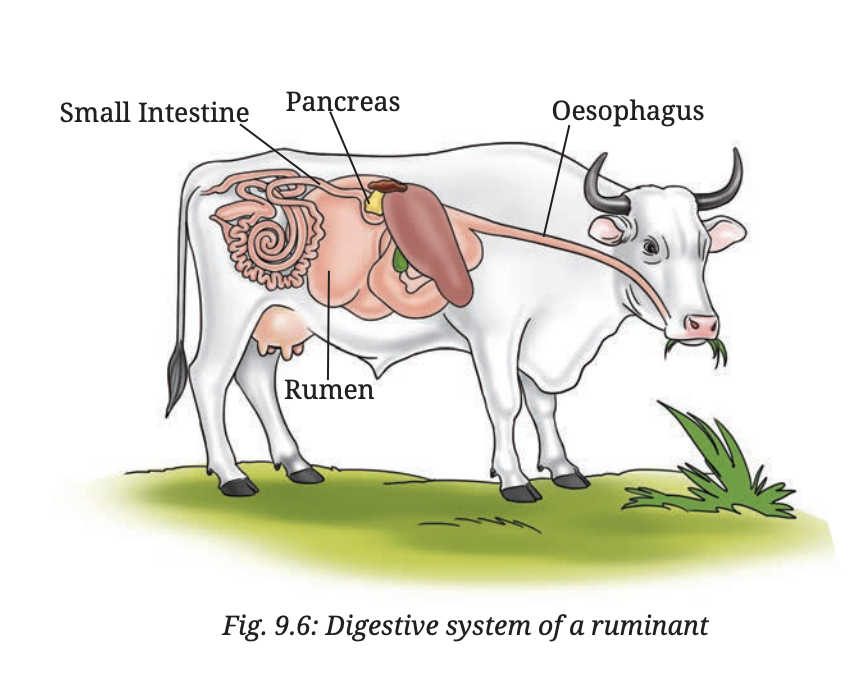
Fig. 9.6 — Digestive system of a ruminant
Ruminants have a special stomach chamber called the rumen where partial digestion and storage of grass takes place
The partially digested food (cud) is regurgitated (brought back up) to the mouth for thorough chewing
This adaptation helps them digest tough grass and plant fibres that are hard to digest
🐦 Birds — The Gizzard
Birds do not have teeth, but they have a chamber called a gizzard (Fig. 9.7). Food is broken down by the contraction and relaxation of the walls of the gizzard, often with the help of grit (small stones) that the birds swallow.
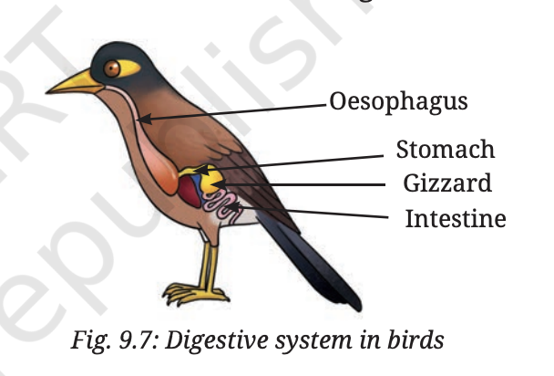
Fig. 9.7 — Digestive system in birds
The gizzard acts as a mechanical grinder — it does the job that teeth do in humans
Birds swallow grit (small stones or sand) which help grind hard seeds and food inside the gizzard
📖 NCERT Conclusion — 9.1.2
This shows that animals exhibit variations in the structure and function of the alimentary canal to adapt to different ways of digesting different kinds of food. The nutrients from digested food are carried to different parts of the body. Some nutrients help build and repair the body, while others, like sugar, are broken down inside the body to release energy. The process by which nutrients are converted into usable energy is called respiration.
9.2 Respiration in Animals
We learnt in Grade 6 that all living beings respire. Is the process of respiration the same in all animals?
💨
Respiration in Animals
Nutrients converted into usable energy — happens in every cell
9.2.1 Respiration in Humans
How is oxygen used in the body? Are breathing and respiration different?
💨 How do we breathe?
The process of inhaling and exhaling air is called breathing. It is difficult to live without food for a week; without water for a day or two, but without breathing, we usually cannot survive more than a few minutes.
Just as food follows a specific pathway in the digestive system, our body also has a specific system for breathing and respiration called the respiratory system (Fig. 9.8). In this system, the exchange of gases follows a specific pathway.
Nostrils — a pair of nasal openings through which we inhale and exhale air
Nasal passages — air passes through; tiny hair and mucus trap dust and dirt → this is why we should breathe through the nose, not mouth
Windpipe (trachea) — carries air from nasal passages to the lungs; forms two branches entering the two lungs
Lungs — branches divide into smaller and finer branches ending in small balloon-like sacs called alveoli (Fig. 9.8); lungs are protected by the rib cage
🔵 Aerobic Respiration
C₆H₁₂O₆ + 6O₂ → 6CO₂ + 6H₂O + Energy (ATP)
Occurs in presence of oxygen
Happens in mitochondria (powerhouse of cell)
Releases 38 ATP per glucose molecule
Produces CO₂ and water as by-products
Most efficient type — used by humans normally
🟣 Anaerobic Respiration
In muscles: C₆H₁₂O₆ → 2 Lactic acid + Energy
In yeast: C₆H₁₂O₆ → 2 Ethanol + 2CO₂ + Energy
Occurs without oxygen
In muscles during intense exercise → lactic acid → muscle cramps
In yeast → ethanol + CO₂ → fermentation (used in baking, brewing)
Releases only 2 ATP — much less efficient
⚠ Breathing vs Respiration — Important Difference!
Feature
Breathing
Respiration
What is it?
Physical process — inhaling O₂ and exhaling CO₂
Chemical process — oxidation of glucose to release energy
Where
Lungs (respiratory organs)
Every living cell (mitochondria)
Energy
Requires energy
Releases energy (ATP)
Type
Mechanical/Physical
Biochemical
Fig. 9.8 — Human Respiratory System
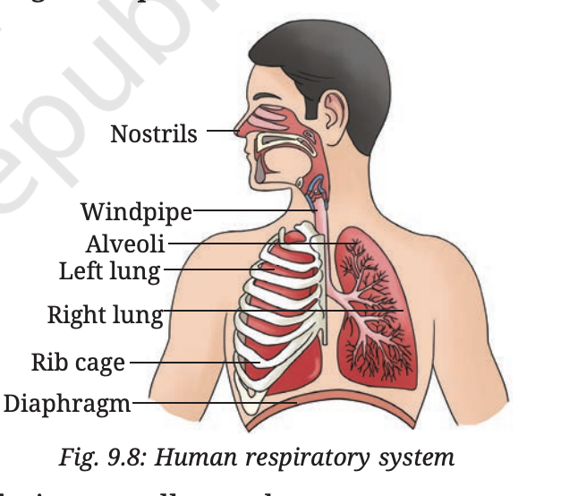
Fig. 9.8 — Human Respiratory System
🌿 Science and Society — Respiratory Health
While a lot of the dust is filtered out from the inhaled air, often small infectious particles can get through to the lungs. For example, during the COVID-19 pandemic, the SARS-CoV-2 virus affected the respiratory system, leading to breathing difficulties and often causing serious lung problems.
🔬 Activity 9.2 — A Model to Show the Mechanism of Breathing
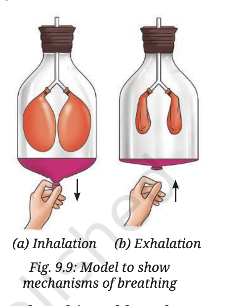
Fig. 9.9 — Model to show mechanism of breathing
Take a wide transparent plastic bottle with a lid; remove its bottom
Fix two deflated balloons to the forked ends of a Y-shaped hollow tube; insert through the lid
Attach a thin rubber sheet tightly to the open base of the bottle
Fig. 9.11 — (a) Air pumped in using syringe | (b) Exhaled air blown through straw
🧫
Test Tube A
Lime water + air pumped in (syringe)
No change
Normal inhaled air
🧫
Test Tube B
Lime water + exhaled air (blown through straw)
Turns milky / cloudy ☁
Exhaled air has more CO₂
Lime water turns milky when it reacts with carbon dioxide. Test Tube B turns milky → exhaled air contains more carbon dioxide than the air we inhale.
🫧 How does the exchange of gases happen? (Fig. 9.12)
Through the process of breathing, fresh air from outside enters the lungs via a specific pathway and fills the alveoli. The alveoli have thin walls surrounded by fine tubes containing blood (Fig. 9.12).
Blood carries CO₂ from the body to the alveoli, where it is released into the air
Oxygen from the alveoli passes into the blood and is transported to all parts of the body
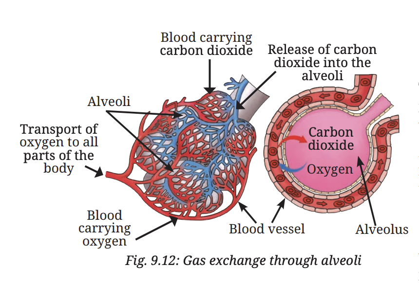
Fig. 9.12 — Gas exchange through the alveoli
⚡ How does food give us energy? — Respiration
When we eat food, our body breaks it down into simple substances like sugar (glucose). Oxygen helps break down glucose to release energy. This process is called respiration.
Glucose + Oxygen → Carbon dioxide + Water + Energy
During breathing, we inhale air and exhale air having more carbon dioxide than the inhaled air. Note that not all the oxygen is used up (Fig. 9.13). Some other animals can use a larger fraction of the oxygen during respiration.
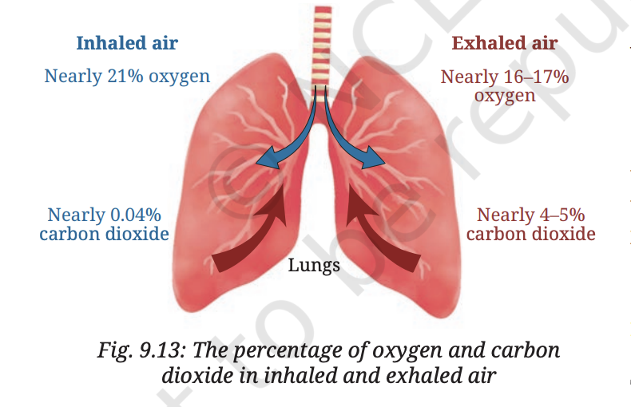
Fig. 9.13 — Percentage of O₂ and CO₂ in inhaled vs exhaled air
This exchange of gases ensures that each part of our body gets oxygen to produce energy and remove waste products.
🚭 Science and Society — Smoking is Harmful
Smoking is extremely harmful to health. It damages the lungs and increases the risk of serious diseases, including lung cancer and other respiratory illnesses. It leads to persistent coughing and frequent infections.
In addition to harming the smoker, smoking releases toxic chemicals into the air, putting others at risk. When non-smokers inhale this polluted air, they experience passive smoking, which can be especially dangerous for children, pregnant women, and the elderly. Avoiding smoking helps protect both personal health and the well-being of those around us.
📖 NCERT — Breathing vs Respiration
Breathing is a physical process — it brings in oxygen and removes carbon dioxide. Respiration is a chemical process that occurs inside the body — it uses oxygen to break down food and release energy. This energy helps us walk, run, play, and even think! Both processes are essential for our survival.
💨 Respiration — Quick Revision
Breathing brings O₂ in; respiration uses O₂ to break down glucose → energy
Word equation: Glucose + Oxygen → CO₂ + Water + Energy
Gas exchange at Alveoli: O₂ → blood; CO₂ → alveoli → exhaled
Inhale: ribs up, diaphragm down | Exhale: ribs down, diaphragm up
Breathing = physical process; Respiration = chemical process
9.3 Transportation in Animals
A unique system for transport of nutrients, oxygen, and other substances to all parts of the body
❤
The Circulatory System
Heart + Blood + Blood Vessels — pumping nutrients and oxygen to every cell
📖 From the Book
Our body has a unique system for the transport of nutrients, oxygen, and other substances. This system is called the circulatory system. It includes the heart, blood, and blood vessels. The heart pumps blood through blood vessels, ensuring the transport of nutrients, oxygen, and other substances to all parts of the body, while waste products are carried away.
9.2.2 Do other animals breathe the same way as humans do?
Different habitats — different breathing mechanisms
Animals such as birds, elephants, lions, cows, goats, lizards, and snakes breathe through their lungs. Although all these animals have lungs, the structure of their lungs are quite different.
🐟 Fish — Gills (Fig. 9.14)
Most aquatic animals like fish have specialised structures known as gills. These are richly supplied with blood vessels. The exchange of oxygen and carbon dioxide between the blood and the gases dissolved in water takes place across the gills.
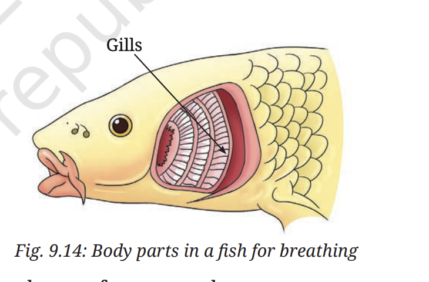
Fig. 9.14 — Body parts in fish used for breathing
🐸 Amphibians — Multiple organs
Amphibians like frogs live both on land and in water. Tadpoles breathe through gills, while adult frogs use lungs on land and skin for gas exchange in water. This adaptation helps them survive in both environments.
🪱 Earthworms — Moist Skin
Earthworms use their moist skin for the exchange of oxygen and carbon dioxide.
📖 NCERT Conclusion — 9.2.2
Thus, different animals have different breathing mechanisms to suit their unique habitats. Apart from the digestive system, the respiratory system, and the circulatory system, there are other systems which work in coordination with each other in the body and perform different functions to sustain life.
Animal
Breathing organ
Special feature
🐟 Fish
Gills
Exchange of O₂/CO₂ with gases dissolved in water
🐸 Frog (tadpole)
Gills
Aquatic stage
🐸 Frog (adult)
Lungs + Skin
Lungs on land; skin in water
🪱 Earthworm
Moist skin
Skin must stay moist for gas exchange
🐦 Birds, 🐘 Elephants, 🦁 Lions, etc.
Lungs
Structure varies; all breathe air
📌 In a Nutshell
Life processes such as nutrition, circulation, respiration, excretion, and reproduction are essential for the survival of living beings. These processes are collectively called life processes.
The human digestive system consists of an alimentary canal which includes the mouth, oesophagus, stomach, small intestine, large intestine, and anus, and its associated parts, the liver and the pancreas.
The digested food is primarily absorbed through the walls of the small intestine.
The nutrients absorbed are distributed through the blood to different parts of the body where they are used for performing various functions.
The large intestine absorbs most of the remaining water and some salts from the undigested food.
Grass-eating animals such as cows and goats are called ruminants. They chew the food partially and swallow it. Later, the partially digested food is returned to the mouth and the animal chews it thoroughly.
Breathing involves the movement of air into the lungs (inhalation) and out of the lungs (exhalation).
The exchange of oxygen and carbon dioxide occurs in the alveoli of the lungs.
Respiration uses oxygen from inhaled air to break down glucose into carbon dioxide and water. The process by which nutrients are converted into usable energy is called respiration.
The circulatory system transports nutrients and oxygen to all parts of the body. It includes the heart, which pumps blood through blood vessels, delivering oxygen and nutrients while also removing waste from the body.
Breathing is a physical process and respiration is a chemical process.
Different animals have different breathing mechanisms adapted to suit their habitats.
🧠 Let Us Enhance Our Learning
Q1. Complete the journey of food through the alimentary canal by filling up the boxes with appropriate parts — Given: Food, Mouth, Stomach, Anus
Food → Mouth → Oesophagus → Stomach → Small Intestine → Large Intestine → Anus
Blue boxes = given; Green boxes = filled in answers
Q2. Sahil placed chapati pieces in test tube A; Neha placed chewed chapati in B; Santushti took boiled mashed potato in C. All added iodine solution. What would their observations be? Give reasons.
Test Tube A (chapati pieces + iodine): Turns blue-black — starch is present, not yet broken down by any enzyme.
Test Tube B (chewed chapati + iodine): Does NOT turn blue-black — saliva (salivary amylase) has already broken down starch into sugars during chewing, so no starch remains to react with iodine.
Test Tube C (boiled mashed potato + iodine): Turns blue-black — potato contains starch. Boiling and mashing do not digest starch chemically, so it still reacts with iodine.
Q3. What is the role of the diaphragm in breathing? (i) To filter the air (ii) To produce sound (iii) To help in inhalation and exhalation (iv) To absorb oxygen
✓ Answer: (iii) To help in inhalation and exhalation
The diaphragm is a dome-shaped muscle beneath the lungs. When it contracts and moves downward, the chest cavity expands → air rushes in (inhalation). When it relaxes and moves upward, the space reduces → air is pushed out (exhalation).
Q4. Match the following
Name of the Part
Function (Matched)
(i) Nostrils
→ (a) Fresh air from outside enters
(ii) Nasal passages
→ (d) Tiny hair and mucus help to trap dust and dirt from the air we breathe
(iii) Windpipe
→ (e) Air reaches our lungs through this part
(iv) Alveoli
→ (b) Exchange of gases occurs
(v) Ribcage
→ (c) Protects lungs
Q5. Anil claims that respiration and breathing are the same process. What questions can Sanvi ask him to make him understand he is not correct?
"Breathing only involves moving air in and out of the lungs — but can you explain the chemical reaction that provides energy to the body?"
"Does breathing happen in every cell of the body, or only in the lungs? Respiration happens in every cell — where does breathing happen?"
"Breathing is a physical process — can you tell me what chemical process produces energy from glucose in our cells?"
Key Difference: Breathing = physical movement of air into/out of lungs. Respiration = chemical process in cells: Glucose + O₂ → CO₂ + H₂O + Energy
Q6. Which statement is correct and why? Anu: "We inhale air." | Shanu: "We inhale oxygen." | Tanu: "We inhale air rich in oxygen."
✓ Tanu is most correct — "We inhale air rich in oxygen."
Anu is partially correct — we do inhale air, but the statement is incomplete as it doesn't highlight oxygen content. Shanu is incorrect — we inhale air, not pure oxygen. Air contains ~78% nitrogen, ~21% oxygen, and ~0.04% CO₂. Tanu is accurate — inhaled air is rich in oxygen (~21%), while exhaled air has less oxygen (~16%) and more CO₂ (~4%).
Q7. We often sneeze when we inhale a lot of dust-laden air. What can be possible explanations for this?
The nasal passages are lined with tiny hairs and a layer of mucus that trap dust and dirt particles from inhaled air.
When a large amount of dust is inhaled, these particles irritate the sensitive lining (mucous membrane) of the nasal passages.
The irritation triggers a reflex action — the body forces a sudden burst of air through the nose and mouth to expel the irritant. This is called a sneeze.
Sneezing is a protective mechanism that clears the nasal passages of dust, pollen, or pathogens before they can reach deeper into the respiratory tract.
Q8. After their morning run, Anusha was breathing faster than Paridhi. Provide at least two possible explanations for why.
Explanation 1 — More physical exertion: Anusha may have run a longer distance or at a faster speed than Paridhi. Greater exertion means muscles use more oxygen and produce more CO₂, increasing the breathing rate.
Explanation 2 — Lower fitness level: Anusha may be less physically fit. A less efficient respiratory and circulatory system requires more breaths per minute to supply the same amount of oxygen to muscles.
Explanation 3 — Health or other factors: Anusha may have a respiratory condition, or environmental factors (running in a dusty area) could have increased her breathing rate.
Q9. Yadu added rice flour (+ water) to test tube A, and rice flour + water + saliva to test tube B. After 35–45 min, he added iodine to both (Fig. 9.15). What does he want to test?
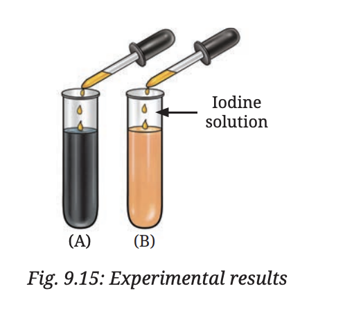
Fig. 9.15 — Experimental Results (Test Tubes A and B)
What Yadu wants to test: Whether saliva helps in the digestion of starch — specifically, does saliva break down the starch present in rice flour?
Expected results: Test tube A (no saliva) turns blue-black with iodine — starch is unchanged. Test tube B (with saliva) does NOT turn blue-black — salivary amylase broke down the starch into sugars.
Conclusion: Saliva contains salivary amylase which digests starch. Digestion of starch begins in the mouth itself.
Q10. Rakshita filled two test tubes with lime water. In test tube A, she passed inhaled (atmospheric) air; in test tube B, she blew exhaled air (Fig. 9.16). What is she investigating? How can she confirm her findings?
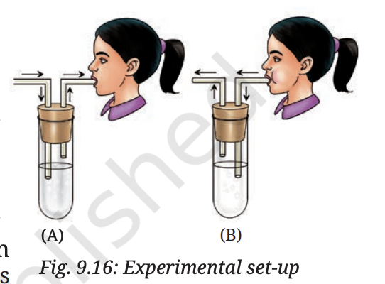
Fig. 9.16 — Experimental Setup (Lime Water Test)
What she is investigating: Whether exhaled air contains more carbon dioxide than inhaled air.
How to confirm: Lime water (Ca(OH)₂) turns milky white when CO₂ is passed through it, forming calcium carbonate (CaCO₃). Test tube A (inhaled air) will remain clear. Test tube B (exhaled air) will turn milky, confirming that exhaled air is richer in CO₂.
Conclusion: We exhale more carbon dioxide than we inhale — CO₂ is a waste product of cellular respiration occurring in every cell of the body.
🔬 Exploratory Projects
🦷 Research good practices for maintaining oral hygiene. Gather information from books, newspapers, or elders. Prepare a report.
🥗 Find out different ways to maintain a healthy digestive system. Suggest food items that help. Make a report and present in class.
🏺 Using coloured clay, prepare a 3-D model of the digestive system and label all parts using black paper strips.
🌬️ What is air quality and AQI? Find out the effect on the respiratory systems of farmers, factory workers, and street vendors.
🧘 Read about the box-breathing technique (Fig. 9.17). What are its benefits?
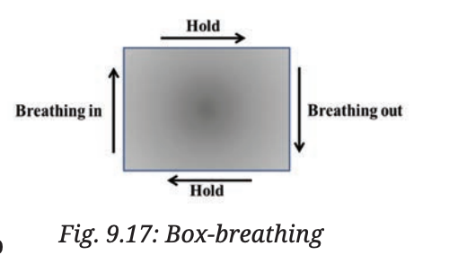
Fig. 9.17 — Box Breathing Technique
🦅 Both birds and mammals have lungs, but birds can fly at high altitudes where oxygen is low. How might their respiratory system be adapted to survive such conditions?
✏ Multiple Choice Questions — 20 Questions
Covers all 4 life processes. Click an option to check instantly!
Q1
The enzyme salivary amylase in saliva digests ___
✅ Starch. Salivary amylase (ptyalin) in the mouth begins chemical digestion of starch, converting it into maltose.
Q2
Which acid is present in gastric juice?
✅ Hydrochloric acid (HCl). HCl in gastric juice kills bacteria, creates an acidic medium (pH 1.5–2) needed for pepsin to digest proteins.
Q3
Where does complete digestion of food take place?
✅ Small Intestine. Bile, pancreatic juice and intestinal juice act here to complete digestion of all nutrients. Absorption also occurs through villi.
Q4
Villi are present in the ___
✅ Small Intestine. Villi are finger-like projections lining the small intestine. They greatly increase the surface area for absorption of digested food.
Q5
The equation for aerobic respiration is ___
✅ Glucose + O₂ → CO₂ + H₂O + Energy. In aerobic respiration, glucose is completely oxidised in the presence of oxygen to release maximum energy (38 ATP).
Q6
Anaerobic respiration in muscles produces ___
✅ Lactic acid. During intense exercise, muscles respire anaerobically producing lactic acid. Build-up of lactic acid causes muscle cramps and fatigue.
Q7
Gas exchange in human lungs takes place at ___
✅ Alveoli. Tiny air sacs (alveoli) have thin walls, rich blood supply and huge surface area (~70 m²) — perfect for gas exchange by diffusion.
Q8
Which blood cells carry oxygen?
✅ Red Blood Cells (RBC). RBCs contain haemoglobin (a protein with iron) that binds oxygen and carries it from lungs to all body cells. They have no nucleus in mammals.
Q9
The universal blood donor has blood group ___
✅ O. Group O blood can be donated to people of all blood groups (A, B, AB, O), making O the universal donor. AB is the universal recipient.
Q10
The functional unit of the kidney is ___
✅ Nephron. Each kidney contains about 1 million nephrons. A nephron filters blood through ultrafiltration, reabsorbs useful substances, and produces urine.
Q11
Bile is produced by the ___ and stored in the ___
✅ Liver; Gall bladder. The liver (largest gland) produces bile which is stored in the gall bladder and released into the small intestine to emulsify fats.
Q12
Arteries carry blood ___ the heart
✅ Away from. Arteries always carry blood away from the heart (usually oxygenated). Veins bring blood back to the heart (usually deoxygenated).
Q13
The human heart has ___ chambers
✅ 4 chambers. Right Atrium, Right Ventricle, Left Atrium, Left Ventricle. This 4-chamber design allows complete separation of oxygenated and deoxygenated blood.
Q14
Fish breathe using ___
✅ Gills. Fish extract dissolved oxygen from water using gills. The gill filaments are richly supplied with blood capillaries for efficient gas exchange.
Q15
Large intestine mainly absorbs ___
✅ Water. The large intestine absorbs water from the undigested food, turning it into semi-solid faeces. Most nutrients are already absorbed in the small intestine.
Q16
Insects breathe through ___
✅ Spiracles and Tracheae. Insects have tiny pores (spiracles) on their body leading to a network of air tubes (tracheae) that deliver oxygen directly to cells.
Q17
Peristalsis is the movement of food through the ___
✅ Oesophagus and intestines by wave-like muscular contractions. Peristalsis is the rhythmic wave-like contraction of muscles that pushes food along the digestive tract.
Q18
The liver converts toxic ammonia to ___
✅ Urea. The liver detoxifies ammonia (from protein breakdown) by converting it to the less toxic urea. Urea is then transported to kidneys and excreted in urine.
Q19
Earthworms respire through ___
✅ Moist skin (cutaneous respiration). Earthworms have no lungs — oxygen diffuses directly through their thin, moist skin into body fluids. This is why they come out after rain (to avoid drowning).
Q20
Which is the largest gland in the human body?
✅ Liver. The liver is the largest gland and largest internal organ in the human body. It produces bile, detoxifies blood, stores glycogen, and makes proteins.
1 Mark Questions1MWhat is holozoic nutrition?
Holozoic nutrition is a mode of nutrition in which an animal takes in solid or liquid food, digests it inside the body, absorbs the digested nutrients and egests undigested waste. Steps: Ingestion → Digestion → Absorption → Assimilation → Egestion. Most animals including humans follow this mode.
1MWhat are villi? What is their function?
Villi (singular: villus) are tiny finger-like projections that line the inner wall of the small intestine. Their function is to greatly increase the surface area for absorption of digested food into the bloodstream. Each villus contains blood capillaries and lacteals (for fat absorption).
1MDistinguish between breathing and cellular respiration.
Breathing is a physical/mechanical process of inhaling O₂ and exhaling CO₂ using lungs. Cellular respiration is a biochemical process occurring in every cell's mitochondria, where glucose is oxidised to release energy (ATP). Breathing provides O₂ for cellular respiration and removes its CO₂ waste.
1MWhat is the role of the diaphragm in breathing?
The diaphragm is a dome-shaped muscular sheet below the lungs. During inhalation, it contracts and flattens, increasing chest volume, so air rushes in. During exhalation, it relaxes and rises, decreasing chest volume, pushing air out. It works with intercostal muscles (between ribs).
1MWhat is excretion? Name two excretory organs.
Excretion is the process of removing metabolic waste products from the body. Two main excretory organs: (1) Kidneys — excrete urea, salts and water as urine; (2) Lungs — excrete CO₂ and water vapour during exhalation.
1MWhat is anaerobic respiration? Give one example.
Anaerobic respiration is the breakdown of glucose to release energy without oxygen. Example: In yeast — glucose is broken down into ethanol + CO₂ + energy (used in fermentation/baking). In muscles during heavy exercise, anaerobic respiration produces lactic acid, causing cramps.
1MWhat are ruminants? Give two examples.
Ruminants are grass-eating animals that partially chew their food, swallow it, and later bring it back to the mouth to chew it thoroughly. This process is called rumination. Examples: Cow, Goat (also buffalo, deer, giraffe). They have a special stomach chamber called the rumen where grass is stored and partially digested.
1MWhat is peristalsis?
Peristalsis is the wave-like, rhythmic contraction and relaxation of muscles in the walls of the alimentary canal (especially the oesophagus and intestines) that pushes food forward through the digestive tract. It ensures food moves in one direction — from mouth towards anus — without needing gravity.
1MName the enzyme present in saliva. What does it digest?
The enzyme present in saliva is Salivary Amylase (also called ptyalin). It digests starch (a complex carbohydrate) and converts it into maltose (a simpler sugar). This begins the process of chemical digestion of carbohydrates in the mouth itself.
1MWhat is the function of bile? Where is it produced and stored?
Bile is a greenish-yellow liquid that emulsifies fats — it breaks large fat globules into tiny droplets, increasing the surface area for fat-digesting enzymes (lipase) to act on. Bile is produced by the liver and stored in the gall bladder. It is released into the small intestine when fatty food enters.
1MWhat is egestion?
Egestion is the process of removing undigested, unabsorbed food material from the body through the anus in the form of faeces (stool). It is the last step of holozoic nutrition: Ingestion → Digestion → Absorption → Assimilation → Egestion. Note: Egestion is NOT excretion — egestion removes undigested food, while excretion removes metabolic waste.
1MWhat is the function of the alveoli?
Alveoli (singular: alveolus) are tiny air sacs at the end of bronchioles in the lungs. Their function is the exchange of gases — oxygen from inhaled air diffuses through the thin alveolar walls into surrounding blood capillaries, while carbon dioxide from blood diffuses out into the alveoli to be exhaled. Their large number (≈700 million) provides a huge surface area for efficient gas exchange.
1MDefine nutrition. What are the five steps of holozoic nutrition?
Nutrition is the process by which organisms obtain and use food for energy, growth, and repair. The five steps of holozoic nutrition are:
Ingestion — taking food into the body
Digestion — breaking down complex food into simple molecules
Absorption — absorbing digested nutrients into blood
Assimilation — using absorbed nutrients for energy and growth
Egestion — removing undigested waste
2 Mark Questions2MDescribe the role of the stomach in digestion.
The stomach is a J-shaped muscular bag that performs both mechanical and chemical digestion:
Mechanical: churning movements mix food with gastric juice to form chyme
Chemical (gastric juice contains):
HCl: kills bacteria, provides acidic medium (pH 1.5), activates pepsin
Pepsin: enzyme that begins protein digestion (proteins → peptides)
Mucus: protects stomach wall from its own acid
Food stays in stomach 2–4 hours, becoming semi-liquid chyme
2MExplain double circulation in humans.
In humans, blood passes through the heart twice per complete circuit — called double circulation:
Pulmonary circulation: Right side of heart → Pulmonary artery → Lungs (CO₂ removed, O₂ loaded) → Pulmonary vein → Left side of heart
Systemic circulation: Left side of heart → Aorta → All body organs (O₂ delivered, CO₂ collected) → Veins → Right side of heart
Advantage: Oxygenated and deoxygenated blood never mix; high pressure maintained to all organs.
2MCompare aerobic and anaerobic respiration.
Aerobic: requires oxygen | C₆H₁₂O₆ + 6O₂ → 6CO₂ + 6H₂O + 38 ATP | Occurs in mitochondria | Complete oxidation | More energy
Anaerobic: no oxygen required | Glucose → Lactic acid + 2 ATP (muscles) OR Ethanol + CO₂ + 2 ATP (yeast) | Less energy | Incomplete oxidation
Key difference: Aerobic gives 19× more energy per glucose molecule than anaerobic.
2MWhat are the components of blood and their functions?
Intestinal juice: completes digestion of all nutrients
Final absorbable products: Glucose, Amino acids, Fatty acids + Glycerol. These are absorbed into blood via villi.
3MExplain the structure and function of the human excretory system.
The human excretory system consists of:
2 Kidneys: bean-shaped organs; each has ~1 million nephrons (filtering units). Renal artery brings blood; kidneys filter it through ultrafiltration, reabsorb useful substances (glucose, amino acids, water), secrete extra waste → produce urine (~1.5 L/day)
2 Ureters: carry urine from kidneys to urinary bladder
Urinary Bladder: stores urine until it is full (~300-400 mL)
Urethra: carries urine outside the body
Urine composition: 95% water + urea + uric acid + salts + pigments.
Other organs: Lungs (CO₂), Skin (sweat: salts + urea), Liver (converts ammonia → urea; bile pigments).
3MHow does respiration occur in different animals — fish, insects and earthworms?
Fish — Gills: Water enters through mouth → flows over gill filaments (richly supplied with capillaries) → dissolved O₂ diffuses into blood; CO₂ diffuses out → water exits through gill slits. Efficient countercurrent exchange.
Insects — Spiracles and Tracheae: Tiny openings (spiracles) on body segments lead to a network of air tubes (tracheae) that branch into finer tracheoles reaching every cell. O₂ is delivered directly to cells without a circulatory system — very efficient for small bodies.
Earthworms — Moist Skin: Earthworms have no lungs or gills. O₂ dissolves in the moisture on their skin and diffuses directly into body fluids; CO₂ diffuses out the same way. Their skin must remain moist — this is why they surface after rain and die when dry.
3MDescribe the role of the liver and pancreas in digestion.
Liver:
The largest gland in the body, located in the upper right abdomen.
Produces bile — a greenish-yellow liquid that emulsifies fats (breaks large fat droplets into tiny ones, increasing surface area for lipase to act).
Bile is stored in the gall bladder and released into the small intestine when needed.
Bile is mildly basic — it also neutralises the acid (HCl) from the stomach, creating the right pH for intestinal enzymes.
Pancreas:
A large gland behind the stomach that produces pancreatic juice.
Pancreatic juice is basic and contains three enzymes: Amylase (starch → sugar), Trypsin (proteins → amino acids), Lipase (fats → fatty acids + glycerol).
It is released into the small intestine and is crucial for digesting all three major nutrients.
Both the liver and pancreas are associated glands (not part of the alimentary canal) but essential for digestion.
3MExplain how frogs and earthworms carry out respiration.
Frogs (Amphibians):
Frogs can breathe through both lungs and skin — called cutaneous respiration.
On land, they breathe using their lungs — air enters through nostrils.
In water, they breathe through their moist skin — oxygen dissolved in water diffuses directly through the skin into blood; CO₂ diffuses out.
Tadpoles (larval stage) breathe through gills (like fish).
The skin must stay moist at all times for cutaneous respiration to work.
Earthworms:
Earthworms have no lungs, gills, or any specialised respiratory organ.
They breathe entirely through their moist skin.
Oxygen dissolved in the moisture on the skin surface diffuses directly into blood vessels running just beneath the skin.
CO₂ from the blood diffuses out through the skin.
Their skin must remain moist — they come to the surface after rain and die if they dry out.
3MWhat is the circulatory system? Describe the components of blood and their functions.
The circulatory system is the system that transports oxygen, nutrients, hormones, and waste products throughout the body. It consists of the heart, blood, and blood vessels.
Components of Blood:
Plasma (55%): The liquid part of blood. It is pale yellow and carries dissolved nutrients (glucose, amino acids), hormones, CO₂, plasma proteins, and antibodies.
Red Blood Cells / RBC (~44%): Contain haemoglobin — a red pigment that carries oxygen. They transport O₂ from lungs to all cells. Have no nucleus in mature state (mammals). Made in bone marrow.
White Blood Cells / WBC (<1%): Part of the immune system. They fight bacteria, viruses, and other pathogens. Have a nucleus. Types: neutrophils, lymphocytes, monocytes.
Platelets (<1%): Tiny cell fragments that help in blood clotting when a blood vessel is injured. They prevent excessive blood loss.
Blood also transports heat to help regulate body temperature.
5 Mark Questions5MDescribe the human digestive system with a labelled diagram. Explain the role of each organ.
The human digestive system is about 9 metres long from mouth to anus.
Mouth: Teeth (incisors, canines, premolars, molars) mechanically break food. Salivary amylase digests starch → maltose. Tongue forms food into bolus.
Oesophagus: ~25 cm muscular tube. Peristalsis moves bolus to stomach. No digestion.
Stomach: J-shaped bag. Gastric juice (HCl + pepsin + mucus). Pepsin: proteins → peptides. Mucus protects lining. Forms chyme.
Liver: Largest gland. Produces bile → emulsifies fats. Bile stored in gall bladder.
Pancreas: Produces pancreatic juice (amylase, lipase, trypsin) → released into small intestine.
Small Intestine (~7 m): Bile + pancreatic juice + intestinal juice → complete digestion. Final products: glucose, amino acids, fatty acids + glycerol. Absorbed by villi into blood.
Large Intestine (~1.5 m): Absorbs water. Forms faeces.
Rectum + Anus: Stores and expels faeces (egestion).
5MDescribe the human respiratory system. Explain the mechanism of breathing and how gas exchange occurs in the alveoli.
Human Respiratory System: The respiratory system consists of — Nostrils → Nasal passages → Windpipe (Trachea) → Bronchi → Bronchioles → Alveoli (inside the lungs).
Nostrils: Air enters through the two nasal openings.
Nasal passages: Lined with tiny hairs and mucus that trap dust and dirt; warm and moisten the air.
Windpipe (Trachea): Carries air to the chest. Has C-shaped cartilage rings to keep it open.
Bronchi: The trachea divides into two bronchi — one for each lung.
Bronchioles: Bronchi branch into finer and finer tubes inside the lung.
Alveoli: Tiny air sacs at the end of bronchioles (~700 million). Thin walls, surrounded by capillaries — site of gas exchange.
Mechanism of Breathing:
Inhalation: Ribs move up & outward; diaphragm moves downward → chest volume increases → air rushes in.
Exhalation: Ribs move down & inward; diaphragm moves upward → chest volume decreases → air pushed out.
Gas Exchange in Alveoli:
Inhaled air (rich in O₂) fills the alveoli.
O₂ diffuses from alveoli into surrounding blood capillaries (where O₂ concentration is low).
CO₂ diffuses from blood capillaries (where CO₂ is high) into the alveoli.
CO₂-rich air is then exhaled.
Respiration equation: Glucose + Oxygen → Carbon dioxide + Water + Energy Key distinction: Breathing = physical process (movement of air). Respiration = chemical process (release of energy from glucose in cells).
5MExplain the circulatory system in humans. Describe the structure of the heart and double circulation.
The Circulatory System transports oxygen, nutrients, hormones and waste throughout the body via blood, heart and blood vessels.
Arteries: thick walls, carry blood away from heart (usually oxygenated)
Veins: thin walls, have valves, carry blood to heart (usually deoxygenated)
Capillaries: 1 cell thick, exchange materials between blood and cells
Heart Structure (4 chambers):
Right Atrium (RA): receives deoxygenated blood from body (via superior/inferior vena cava)
Right Ventricle (RV): pumps deoxygenated blood to lungs (via pulmonary artery)
Left Atrium (LA): receives oxygenated blood from lungs (via pulmonary vein)
Left Ventricle (LV): pumps oxygenated blood to entire body (via aorta)
Valves between chambers prevent backflow. Heartbeat: ~70–72 beats/min. Sounds: Lub-Dub.
Double Circulation:
Pulmonary: RV → Lungs (oxygenation) → LA
Systemic: LV → Body (O₂ delivery, CO₂ collection) → RA
Blood passes through heart twice per complete circuit — ensuring oxygenated and deoxygenated blood never mix, and maintaining high pressure to all organs.